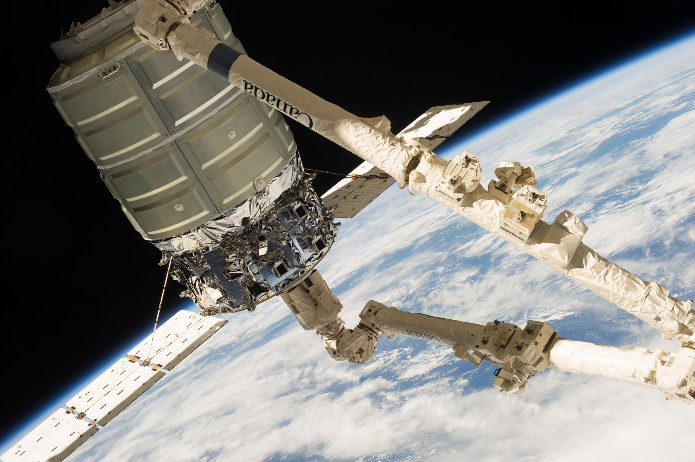
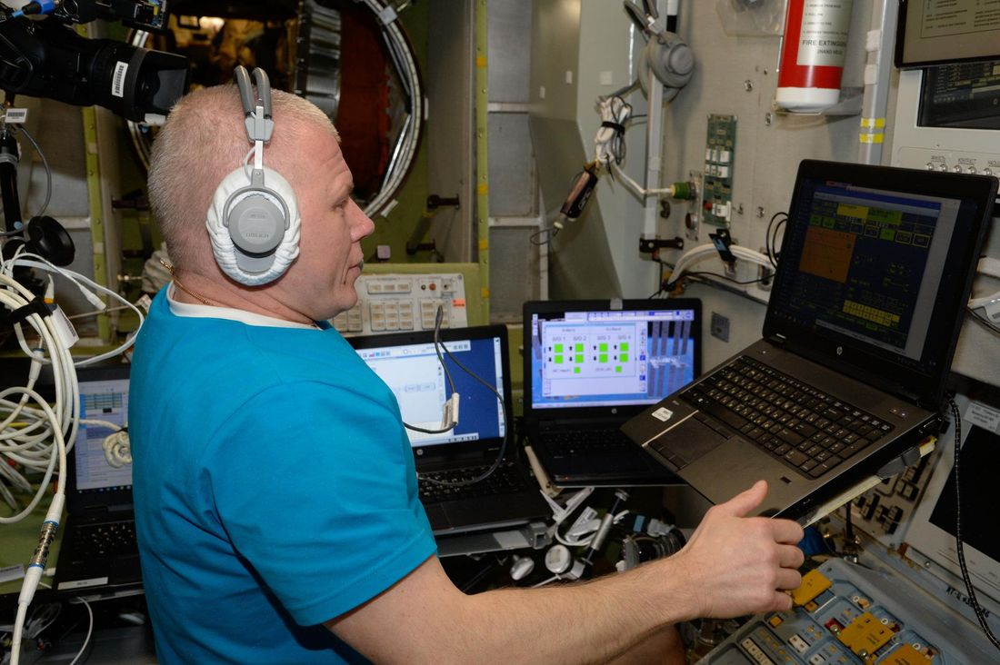

Shifted sleep
Dockings, cargo captures and spacewalks often move crew sleep away from the normal schedule.
docker compose up -d --build in the CrewReady folder.
NASA International Space Apps Challenge 2026
Pre-task readiness assessment for International Space Station crew operations
Footage: NASA — 4K Earth views from the International Space Station

Pre-task readiness · ISS operations
Seven operation-specific checks, followed by an optional local movement break. Cognitive and movement observations stay separate; the crew agrees its own cross-check.
Image: NASA — Cygnus capture by Canadarm2 (ISS037)
Upcoming operations
Why it matters
Dockings, cargo captures and spacewalks often move crew sleep away from the normal schedule.
People who are short of sleep tend to underestimate how much their vigilance and reaction time have dropped.
One early command during a capture or one wrong unit during maintenance is expensive. A short, objective check gives the crew facts to discuss.

Method
ISS crews have used a 3-minute psychomotor vigilance test to see how fatigue affects performance. CrewReady applies the same principle (a short, repeatable test compared with your own baseline) to the specific skill of each operation: timing for a capture, vigilance for a docking, fine motor control for a spacewalk, working memory for an experiment.
Read the methodOperation briefings
Each briefing includes official NASA footage of the operation and the reason for its check.
Method
Sleep loss does not degrade every skill equally. A capture depends on precise timing on a partner's call. A docking depends on sustained vigilance, a spacewalk on fine motor control and the correct sequence, and an experiment on working memory. CrewReady therefore replaces one generic reaction test with a 30–75-second check for each operation:
| Operation | Check | Metric |
|---|---|---|
| Cargo capture | 2-axis arm steering; grapple only on the CAPTURE call | Response to the call, ms |
| Docking monitor | Three approach indicators; flag an out-of-range value | Time to flag, ms |
| Solar array EVA | Bolt order from memory; torque into the window | Torque error, % of scale |
| Water recovery | Match a unit ID among look-alikes | Decision time, ms |
| Emergency drill | Warning before caution; find the module from a changing view; first response; close the isolating hatch | Response time, ms |
| Ultrasound | Follow the ground call: site, probe angle across the vessel, moderate pressure; save on the call | Time on target, % |
| Microgravity experiment | Recall vial positions; the second rack is turned 180° before recall | Recall accuracy, % |
The approach follows the psychomotor vigilance test used by ISS crews as the Reaction Self-Test. It is very sensitive to sleep loss, and it shows that a short, repeatable test compared with your own baseline can reveal fatigue that people do not notice themselves.
Performance differs a lot between people, so each result is compared only with your own history: the median of your last five valid checks of the same operation on this device.
Demonstration thresholds for the hackathon prototype, not clinical limits.
Live assessment: results are stored in this browser's local storage, separately for each operation, and are never transmitted. Training scenario: a simulated crew member after a short sleep period (5 h 10 min, sleepiness 4/5) with five normal checks of each operation. You can perform the check yourself against that history or load the crew member's recorded result.
Footage, photographs and quoted descriptions: NASA Image and Video Library (images.nasa.gov). NASA and NASA International Space Apps Challenge marks are shown to identify the challenge this prototype was built for; NASA does not endorse this project. CrewReady is not a medical or fitness-for-duty device.
Back to dashboardCritical step
Check
Partner
Two short movements are selected from a pool of three for this session. You can change the current movement, skip one, or skip the whole break. This is an Earth training demonstration; onboard exercise requires separate anchored or resistive equipment and validation.
A repetition counts only after the full return to the starting pose. If tracking is lost, the unfinished repetition is cleared. Webcam angles are approximate observations, not a form or medical score.
Camera frames are processed only on this device. No video, images, or landmarks are transmitted or saved. Only compact movement measurements enter browser-local history.
Camera off. Choose a movement and follow the steps above.
Tracking quality only reflects landmark visibility. Incomplete cycles and time out of frame are excluded from repetition timing.
| Measure | Today | Your usual | Change |
|---|
A personal baseline for this operation needs five checks on this device. To review the comparison now, load a simulated five-check history. It is clearly marked and is not saved.
CrewReady states what changed. Whether and how to proceed is the crew's decision.